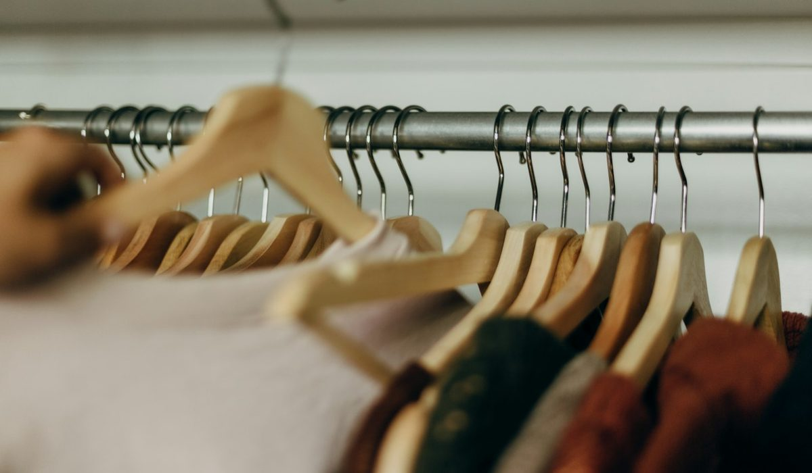
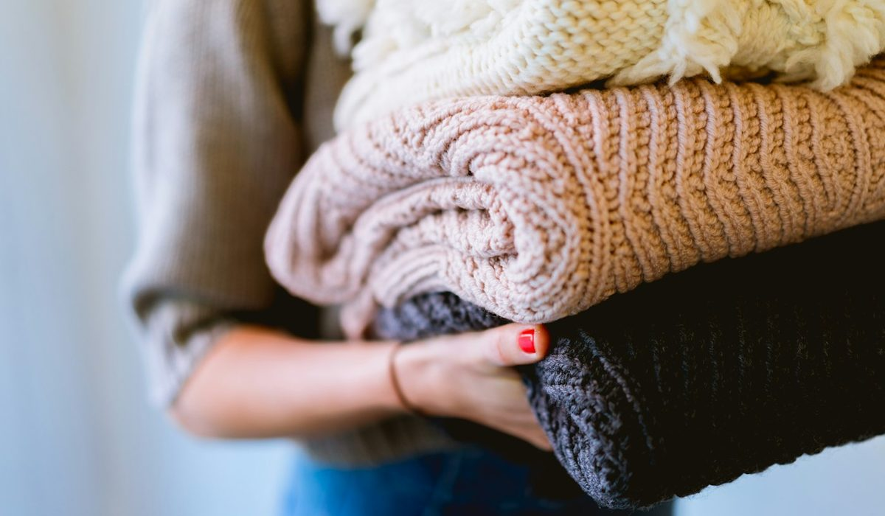

En bref
Une garde-robe capsule de 30 pièces se construit en sept familles, 7 hauts, 5 bas, 3 robes, 4 pièces de maille, 4 manteaux et vestes, 4 paires de chaussures et 3 sacs, sur une palette de quatre couleurs de base et deux accents. La famille qui rapporte le plus à l'usage est celle des manteaux et vestes, notée 9,1/10, parce qu'on la porte tous les jours cinq mois par an. Comptez de 5 210 à 7 805 € en premium, à étaler sur deux ou trois ans.
- 30 pièces hors sous-vêtements, sport, pyjamas et bijoux, chaussures et sacs compris
- 22 pièces restent toute l'année, 8 tournent entre l'automne-hiver et le printemps-été
- Un manteau en drap de laine à 545 € porté 110 jours par an pendant six ans revient à 0,83 € par sortie
- Quatre couleurs de base suffisent à composer plus de 200 tenues différentes avec 30 pièces
- Le budget premium complet va de 5 210 à 7 805 €, soit 145 à 217 € par mois sur trois ans
Sommaire de ce guide
Pourquoi trente pièces suffisent
Ouvrez votre penderie et comptez ce que vous avez porté le mois dernier. Chez la plupart des femmes, le chiffre tourne autour de vingt pièces, alors que la penderie en contient trois ou quatre fois plus. La garde-robe capsule part de ce constat et le retourne. On garde peu, on choisit mieux, et tout s'accorde.
Trente est le bon nombre pour une vie urbaine avec un travail, des week-ends et quelques sorties. En dessous de vingt-cinq, on lave trop souvent et on se lasse. Au-delà de quarante, on retrouve le problème de départ, des pièces qui ne vont avec rien. Nous comptons dans les trente les chaussures et les sacs, parce qu'ils pèsent dans le budget et dans l'allure. Nous laissons dehors les sous-vêtements, les tenues de sport, les pyjamas et les bijoux.
La règle qui fait tenir l'ensemble est simple. Chaque haut doit aller avec au moins trois bas, chaque bas avec au moins quatre hauts. Une pièce qui ne passe pas ce test n'entre pas, même si elle est belle.
Les 30 pièces, famille par famille
Le tableau donne le nombre de pièces par famille, la matière à viser et le budget premium constaté sur les marques françaises de milieu et de haut de gamme. La note mesure ce que la famille rapporte à l'usage, pas sa valeur esthétique.
| Famille | Note /10 | Pièces | Matière conseillée | Budget premium indicatif | Les pièces types |
|---|---|---|---|---|---|
| Manteaux et vestesNotre choix | 9,1 | 4 | Drap de laine, gabardine de coton, laine vierge | 1 185 à 1 615 € | Manteau long, trench, blazer, veste légère |
| Maille | 8,8 | 4 | Mérinos, cachemire, laine et coton | 675 à 945 € | Pull col rond, cardigan, col roulé, pull épais |
| Chaussures | 8,6 | 4 | Cuir de veau pleine fleur, semelle cousue | 800 à 1 210 € | Bottines, mocassins, baskets blanches, ballerines |
| Bas | 8,4 | 5 | Denim brut 12 oz et plus, laine froide, crêpe | 745 à 1 105 € | Deux jeans, pantalon tailleur, pantalon large, jupe midi |
| Sacs | 8,2 | 3 | Cuir de vachette, toile de coton épaisse | 565 à 1 030 € | Cabas, sac porté épaule, petit sac bandoulière |
| Hauts | 7,9 | 7 | Coton peigné épais, popeline, soie | 610 à 955 € | Trois t-shirts, deux chemises, une blouse, un top |
| Robes | 7,4 | 3 | Viscose de qualité, soie, maille fine | 630 à 945 € | Robe chemise, robe midi fluide, robe en maille |
Budgets relevés sur les gammes premium françaises, hors soldes. Note à l'usage selon la fréquence de port, la polyvalence, la durée de vie et le budget. Notes et prix, relevé de démonstration du 3 octobre 2026.

Les manteaux arrivent en tête pour une raison mécanique. De novembre à mars, c'est la seule pièce que tout le monde voit, et on la porte chaque jour. Un drap de laine à 70 % de laine minimum garde sa forme six à huit hivers, là où un mélange à dominante synthétique bouloche dès la deuxième saison.
La maille suit de près. Un pull en mérinos se porte trois ou quatre fois avant lavage, sèche à plat et ne se déforme pas si on évite le cintre. Les robes ferment la marche. Elles sont précieuses, mais une robe s'associe à moins de pièces qu'un pantalon, et c'est ce que la note sanctionne.
La palette, quatre couleurs de base et deux accents
Sans palette, la capsule ne marche pas. Le principe tient en une phrase. Quatre couleurs de base couvrent 24 à 26 pièces, deux accents couvrent le reste, et chaque accent doit aller avec au moins deux bases.
| Rôle | Couleurs possibles | Pièces | Où la placer |
|---|---|---|---|
| Base sombre | Marine, noir, chocolat | 8 à 9 | Manteau, pantalon tailleur, chaussures, sac principal |
| Base claire | Écru, blanc cassé, crème | 6 à 7 | T-shirts, chemises, pull col rond |
| Base neutre | Camel, beige sable, gris chiné | 5 à 6 | Trench, cardigan, mocassins |
| Base denim | Brut, bleu moyen délavé | 4 | Jeans, chemise en jean, veste légère |
| Accent 1 | Bordeaux, vert bouteille, rouille | 3 | Pull, blouse, petit sac |
| Accent 2 | Rayure marine, imprimé fin | 2 à 3 | Marinière, robe midi |
Choisir une seule base sombre. Le marine et le noir dans la même capsule divisent les associations par deux.
Le choix de la base sombre décide de tout le reste. Le marine adoucit et se marie au camel comme au denim. Le noir est plus net mais vieillit les teints clairs et va moins bien au brun. Le chocolat, revenu dans les collections depuis deux saisons, s'accorde au crème et au bordeaux avec une élégance qu'on sous-estime.
Le jour où j'ai arrêté d'acheter du noir pour tout passer en marine, j'ai doublé le nombre de tenues sans racheter une pièce. Une lectrice, 44 ans, Nantes.
La méthode saison par saison
Une capsule de trente pièces ne veut pas dire trente pièces figées. Nous recommandons 22 pièces permanentes et 8 pièces de saison, rangées en haut du placard le reste de l'année.
- Commencez par la liste des 22 permanentes, deux jeans, le pantalon tailleur, la jupe midi, les trois t-shirts, les deux chemises, la blouse en soie, le blazer, le trench, le cardigan, le pull col rond, la robe chemise, les quatre paires de chaussures et les trois sacs.
- En automne-hiver, ajoutez 8 pièces chaudes, le manteau long, une veste matelassée, le col roulé, le pull épais, la robe en maille, une robe midi en crêpe, le pantalon large en laine et un top à manches longues.
- Au printemps-été, ces 8 pièces remontent et laissent la place à leurs équivalents légers, une veste en lin, une veste en jean, deux pulls fins en coton, une robe en coton, une robe midi fluide, un pantalon large en lin et un top en soie.
- À chaque changement de saison, sortez tout, essayez tout, et retirez une pièce pour chaque pièce que vous comptez acheter.
Le changement se fait deux fois par an, fin octobre et fin avril. Il prend une heure. C'est aussi le moment de faire ressemeler une paire de bottines ou de passer le manteau au pressing, avant de le ranger sous housse en coton.
Combien coûte une garde-robe capsule premium
En additionnant les fourchettes du tableau, la capsule complète coûte de 5 210 à 7 805 € en premium, hors soldes. Personne ne l'achète d'un coup. Étalée sur trois ans, la dépense revient à 145 à 217 € par mois, ce que beaucoup de femmes dépensent déjà en achats d'impulsion qu'elles ne portent pas.
Le calcul qui compte est le coût par sortie. Un manteau à 545 € porté 110 jours par an pendant six ans revient à 0,83 € par sortie. Une robe de soirée à 160 € portée trois fois revient à 53 €. C'est pour cela que nous plaçons l'argent d'abord sur le manteau, les chaussures et la maille, et que nous acceptons de payer moins cher les t-shirts, qu'on remplace tous les deux ans de toute façon.

Quelques repères chez les marques que nous suivons. La maille et les blouses de Sézane couvrent bien la base claire et les accents. Le jean brut d'A.P.C. fait partie des denims qui se patinent au lieu de s'user. Côté sacs, la maroquinerie de Polène ou de Longchamp donne une pièce principale qui traverse les saisons. Aucun de ces noms n'est obligatoire, la matière et la coupe comptent plus que l'étiquette.
Achetez dans cet ordre si le budget est serré. D'abord le manteau et une paire de bottines en cuir, puis le pantalon tailleur et la maille, puis le sac principal. Les robes viennent en dernier.
Comment choisir la répartition selon votre vie
Les trente pièces bougent selon l'agenda. Le total ne change pas, la répartition si.
Si vous travaillez au bureau cinq jours par semaine
Passez à 6 bas dont deux pantalons tailleur, et ramenez les t-shirts à deux au profit d'une troisième chemise. Le blazer devient la pièce la plus portée, prenez-le en laine froide, il traverse dix mois de l'année. Un sac porté épaule qui accueille un ordinateur de 14 pouces remplace le petit sac bandoulière.
Si vous êtes en télétravail la moitié de la semaine
La maille prend le dessus, 6 pièces au lieu de 4, et une robe en maille compte comme tenue de visio et de sortie. Gardez un seul pantalon tailleur pour les jours au bureau. Les baskets blanches en cuir montent au rang de chaussures principales.
Si vous êtes une mère active
Tout doit passer en machine à 30 degrés ou presque. Privilégiez le denim, le coton épais et la laine lavable, oubliez la soie au quotidien et gardez la blouse pour les soirs. Un cabas en toile solide remplace le sac en cuir clair, et une deuxième paire de baskets vaut mieux que les ballerines.
Si vous voyagez souvent
Tirez une capsule de voyage de 12 pièces dans les 30, un pantalon large, un jean, trois hauts, une chemise, un pull en mérinos, le trench, une robe qui se froisse peu, deux paires de chaussures et le cabas. Tout tient dans un bagage cabine de 40 litres, et tout s'accorde parce que la palette le garantit.
Notre verdict
Une garde-robe capsule de 30 pièces repose sur trois décisions, une base sombre unique, des matières qui tiennent et un budget placé d'abord sur les manteaux et vestes, la famille la mieux notée à 9,1/10. Comptez 5 210 à 7 805 € en premium, sur deux ou trois ans, et une heure de tri deux fois par an.
Si votre priorité est le budget, commencez par le manteau et les bottines. Si votre priorité est la simplicité du matin, réglez la palette avant d'acheter quoi que ce soit. Si vous voyagez beaucoup, construisez d'abord la capsule de 12 pièces et complétez autour.
Questions fréquentes
Combien de pièces faut-il dans une garde-robe capsule ?
Une garde-robe capsule compte en général entre 25 et 40 pièces. Nous recommandons 30 pièces, chaussures et sacs compris, hors sous-vêtements, sport et pyjamas, réparties en 7 hauts, 5 bas, 3 robes, 4 pièces de maille, 4 manteaux et vestes, 4 paires de chaussures et 3 sacs.
Quel budget prévoir pour une garde-robe capsule premium ?
Une garde-robe capsule de 30 pièces en gamme premium coûte de 5 210 à 7 805 € hors soldes. Étalée sur trois ans, la dépense représente 145 à 217 € par mois. Le poste le plus lourd est celui des manteaux et vestes, de 1 185 à 1 615 €.
Quelles couleurs choisir pour une garde-robe capsule ?
Une garde-robe capsule fonctionne avec quatre couleurs de base, une sombre, une claire, une neutre et le denim, plus deux accents. Le marine, l'écru, le camel et le jean brut forment la combinaison la plus souple, avec un bordeaux ou un vert bouteille en accent.
Est-ce qu'une garde-robe capsule change selon les saisons ?
Oui, une garde-robe capsule de 30 pièces garde 22 pièces toute l'année et fait tourner 8 pièces de saison. Le manteau long, le col roulé et la robe en maille cèdent la place au printemps à une robe fluide, une veste légère et un pantalon en lin.
Par quelle pièce commencer une garde-robe capsule ?
Commencez par le manteau, la pièce la plus visible et la plus portée de novembre à mars. Un drap de laine à 545 € porté 110 jours par an pendant six ans revient à 0,83 € par sortie. Les bottines en cuir et le pantalon tailleur viennent juste après.
Comment sont notées les familles de pièces ?
Chaque famille de la garde-robe capsule est notée sur quatre critères, la fréquence de port (40 %), la polyvalence d'association (30 %), la durée de vie de la matière (20 %) et le budget (10 %). Les budgets viennent des gammes premium françaises hors soldes, en relevé de démonstration du 3 octobre 2026.
Notre méthode
Ce classement repose sur des relevés faits sur les sites officiels et en boutique, refaits chaque mois.
- Les prix sont relevés sur les sites officiels des marques en France, hors soldes et hors code promo, à la date indiquée
- Les matières, l'origine de fabrication et les dimensions sont celles affichées sur les fiches produit
- Chaque sac est porté et rempli en conditions réelles, ordinateur, trousse, gourde et parapluie compris
- Les avis clients vérifiés sont lus un par un sur la tenue des anses, des coins et des finitions
- Les services (livraison, retours, réparation, seconde main) sont testés sur une commande réelle par marque